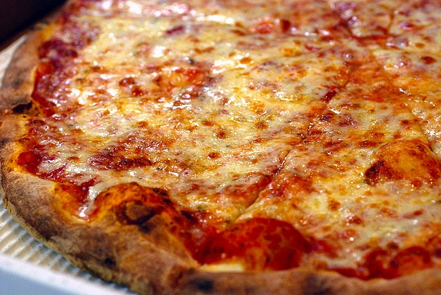

Pizza

Description
This recipe will show you how to create a classic New York style pizza
from the comfort of your own home. Creating this dish is a fun activity
that will surely be better than any fast food chain pizza.
Ingredients
- 1 ball Best Pizza Dough
- 1/3 cup Easy Pizza Sauce
- 4 oz fresh mozzarella cheese
- 4 oz shredded mozarella cheese
- 1/4 teaspoon dried oregano
- 1 teaspoon garlic powder
- kosher salt
- semolina flour or cornmeal
Steps
- Make the pizza dough
- Place a pizza stone in the oven and preheat to 500°F
- Make the pizza sauce
- Slice or tear the cheese
- Stretch the dough over a dusted pizza peel
- Spread the sauce over the stretched dough, making sure to leave enough room for the crust
- Place the pizza into the oven for around 5 to 7 minutes, or until the cheese and crust are browned